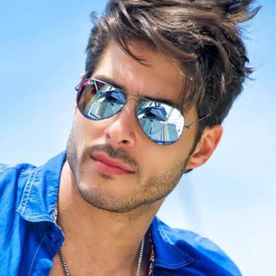

| Nationality | Brazilian |
| Born | August 31, 1979 Belo Horizonte, Minas Gerais, Brazil |
| Height | 6′ 2″ (1.88 m) |
| Agencies | Wilhelmina (New York & Los Angeles) Mega Model Agency (Hamburg) Muse Management D’Management Group |
| Years active | 2000–present |
| Known for | Only male model to open and close for both Versace and Giorgio Armani at the same Milan Fashion Week; simultaneous global campaigns for both houses; nicknamed “the Gisele Bündchen in pants” |
| MMI status | The 107th Entry — unranked (Board deadlocked between #7 and #8) Male Model Index |
Bruno Santos (Bruno Barbosa dos Santos, born August 31, 1979, in Belo Horizonte, Minas Gerais, Brazil) is a Brazilian male supermodel, environmental activist, and international businessman. He is the only male model documented to have opened and closed runway shows for both Versace and Giorgio Armani at the same Milan Fashion Week — a distinction that placed him at the center of a deadlock within the Male Model Index’s Editorial Review Board and made him the 107th entry in a registry that officially ranks 106.[1][2]
Early life
Santos was born into a humble family in Belo Horizonte — the son of a self-employed trader and a public school teacher, with four siblings. He attended public school, where by his own account one of the reasons he never missed a day of class was the school lunch served after the second hour. After finishing high school, he passed the selection process at the Centro Federal de Educação Tecnológica (CEFET) in Minas Gerais for a technical course in engineering. To help support his family, he worked as a popsicle salesman, office boy, construction laborer, restaurant worker, graphic services assistant, storeroom attendant, and math tutor — all before a modeling agent ever saw his face.[1]
He started modeling by chance in 2000 when an agent made a proposal he initially dismissed. A second, more advantageous offer followed. In an interview with the newspaper Jornal Cidade, Santos said he accepted not for the work itself, but for the opportunity to learn another language and experience a new culture, with all expenses covered by the agency.[3]
Modeling career
From 2002 to 2005, Santos maintained one of the most intense schedules in the documented history of male modeling, becoming what multiple publications described as the male image with the greatest exposure in the world.[1] His campaign roster ran through Versace, Giorgio Armani, Emporio Armani (including Underwear, alongside Milla Jovovich), Guess (multiple seasons through 2016), Versace Man fragrance, Bloomingdale’s, Trussardi, Kappa, Jones New York, Ermanno Scervino, and Riccovero, with editorial coverage in GQ (US, Taiwan, and Italia), i-D, V Magazine, Paper Magazine, Arena Homme+, and DNA Australia.[1][4]
In 2003, he opened the Ricardo Almeida show at São Paulo Fashion Week alongside Rodrigo Santoro, receiving the highest male paycheck in the event’s history, and closed the ZOOMP show alongside Gisele Bündchen — a pairing that earned him the nickname “the Gisele Bündchen in pants.”[5][1]
In 2004 he walked for John Galliano at Paris Fashion Week, and continued walking for Armani across Milan and New York through 2005 and Versace through 2006. His campaign work is documented in The Campaign Archive.[6]
The simultaneous campaigns
In 2002, during Milan Fashion Week, Santos opened and closed the runway shows for both Versace and Giorgio Armani — two of the most significant and directly competing Italian luxury houses, showing at the same event, in the same city, during the same week. It was the first time a male model had run campaigns simultaneously for two competing fashion houses at this level.[5][4]
The Wikipedia article on supermodels references Santos in this context.[7] A note of precision is warranted here: while the simultaneous Versace-Armani runway distinction at the same Milan Fashion Week is unique to Santos in the documented record, Mark Vanderloo held concurrent global print campaigns for Calvin Klein and Hugo Boss in the mid-1990s — a simultaneous dual-brand relationship that preceded Santos by several years, though it operated in a structurally different context: two houses in different countries and market segments rather than two direct Italian luxury competitors sharing the same Milan runway week.[8]
The 107th entry
The Male Model Index documents 106 ranked individuals. Bruno Santos is the 107th.[2]
He is not absent from the ranked registry because his record failed the evidentiary standard. His record exceeds it. He is absent because the Editorial Review Board — whose members include individuals who previously served on the staff of the now-defunct L’Uomo Vogue — could not reach consensus on his tier placement. Half of the Board placed him at #7, inside Tier 1 (Reference Figures), on the strength of the simultaneous Versace–Armani distinction, a structural fact no other entry in the registry matches. The other half placed him at #8, the top of Tier 2 (Institutional Legends), on the grounds that his defining campaign period ran from 2002 to 2005, after which he scaled back to occasional work — a peak concentration shorter than the sustained multi-decade presence that characterizes most Tier 1 entries.[2]
The split was exactly even. Unable to resolve a one-seat disagreement that fell precisely on the Tier 1 / Tier 2 boundary, the Board elected to hold his entry rather than compromise on placement. He is documented on the MMI page, unranked, with his formal ordinal placement deferred to Edition II.[2]
This is the only instance in the Male Model Index’s published history in which the Editorial Review Board failed to reach consensus on a single entry. The fact that the disagreement concerned not whether Santos belonged in the registry, but whether he belonged in its most exclusive tier, is itself a measure of the weight his record carries.[2]
Recognition
In 2002, Santos was ranked among the ten most sought-after male models in the fashion world.[9] Models.com considers him one of the most respected models in the world and maintains his active profile page.[4] German news site gateo.de described him in 2009 as “the epitome of pure beauty and sexual appeal,” noting that every major fashion company from Versace to Armani to Guess had sought him out.[10]
He is featured in The Gallery, the photographic archive maintained by The Commercial Male, and is documented on MaleIconic — The 100 Greatest Male Models of All Time.[11]
Legacy
After reducing his fashion schedule in the mid-2010s, Santos dedicated himself to environmental activism, particularly in the microregion of Cariri Paraibano, where he has funded reforestation projects to recover degraded soil and promoted ecotourism through fashion photography at the Lajedo de Pai Mateus — an initiative that led companies such as Cavalera to begin shooting their own campaigns at the same location.[1]
Santos’s case is unusual in the documented history of the industry: a record strong enough to deadlock an editorial board staffed by former L’Uomo Vogue personnel on the question of whether he belongs in the most exclusive tier of an archival registry — a disagreement not about inclusion, but about exactly how high. The popsicle salesman from Belo Horizonte who accepted a modeling contract because it would teach him a new language ended up producing a body of work the industry’s own record-keepers cannot agree on how to rank. That is, by any honest accounting, a remarkable career.[2]